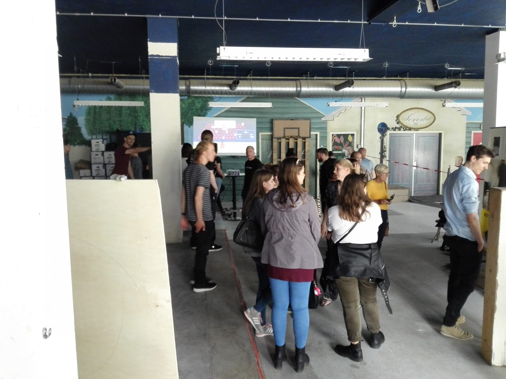

Het eindproduct is een interactieve manier van basketballen: Eén persoon tegelijkertijd heeft exact twee minuten de tijd om zoveel mogelijk punten te behalen. De speler krijgt bij elk succesvol schot in de basket een punt erbij. Wanneer de speler na twee minuten spelen een hogere score heeft dan de highscore, dan wordt de highscore automatisch overschreven. Het puntensysteem en de timer worden gedaan in de arduino software en alle tekst op beeld dat veranderd in processing. Daarnaast zorgt processing ervoor dat elke keer dat er gescoort wordt, er een animatie wordt afgespeeld van een scorende basketballer. Wanneer de bal door de ring gaat, krijgt de nabijheidssensor in de ring een seintje dat er een object binnen zijn range (ik geloof 30 cm) zit. Zodra hij dit seintje krijgt, wordt er een punt opgeteld bij de huidige score.
